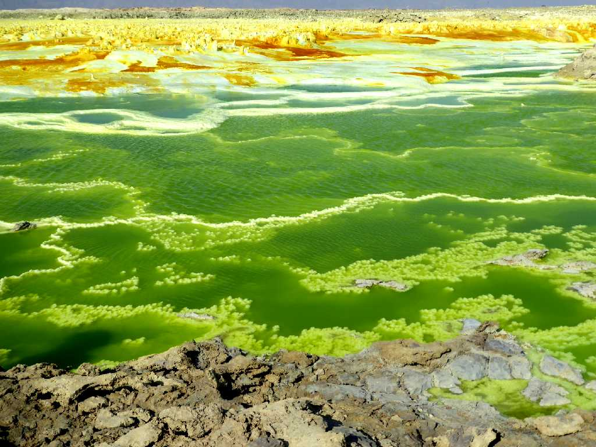
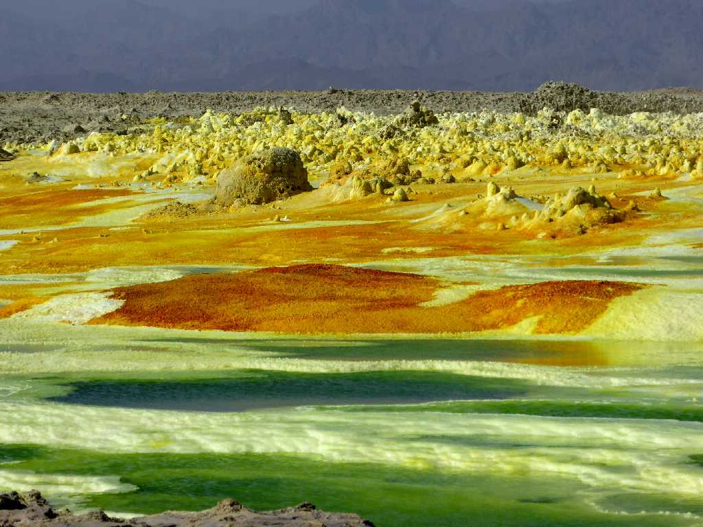
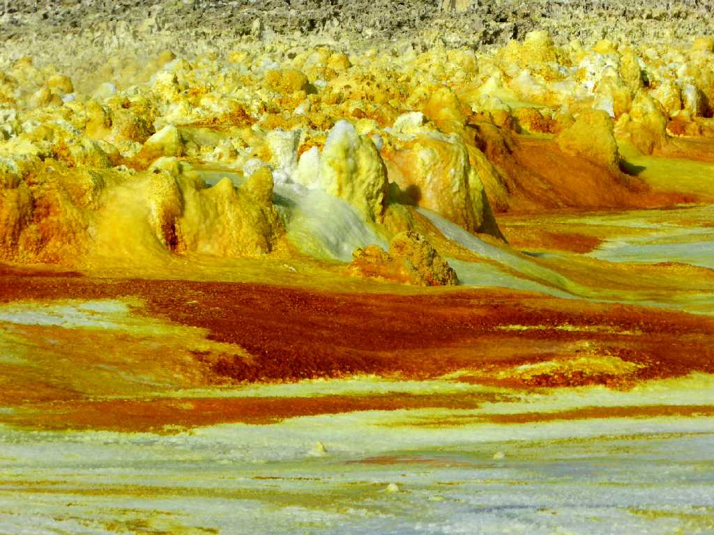
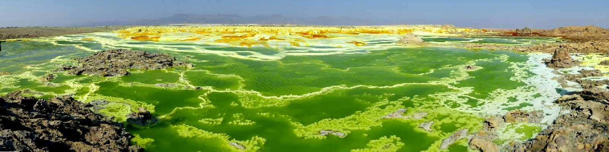
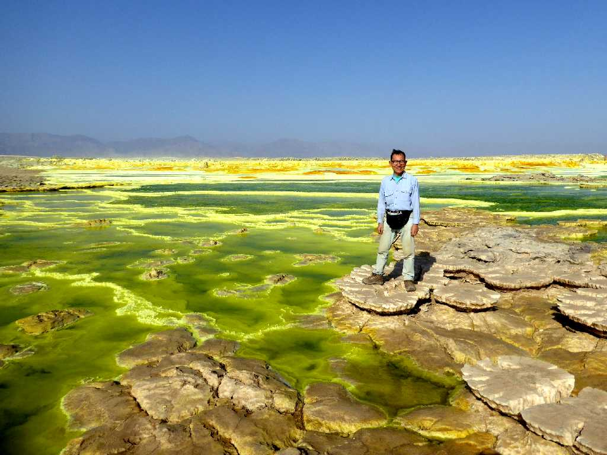
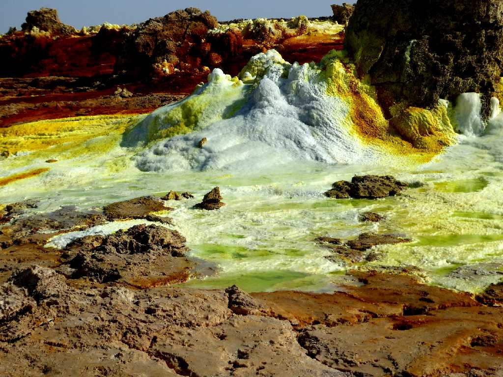
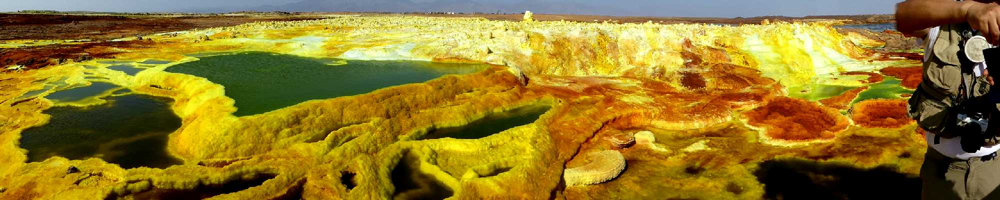
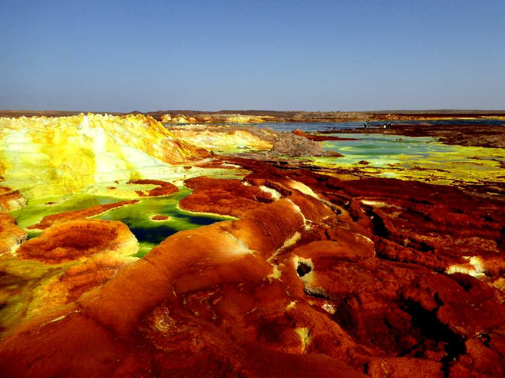
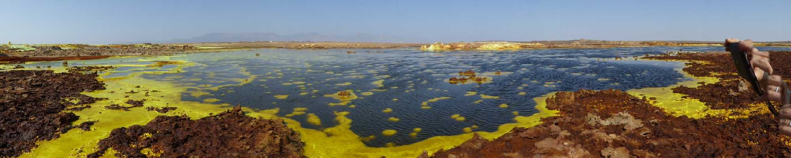
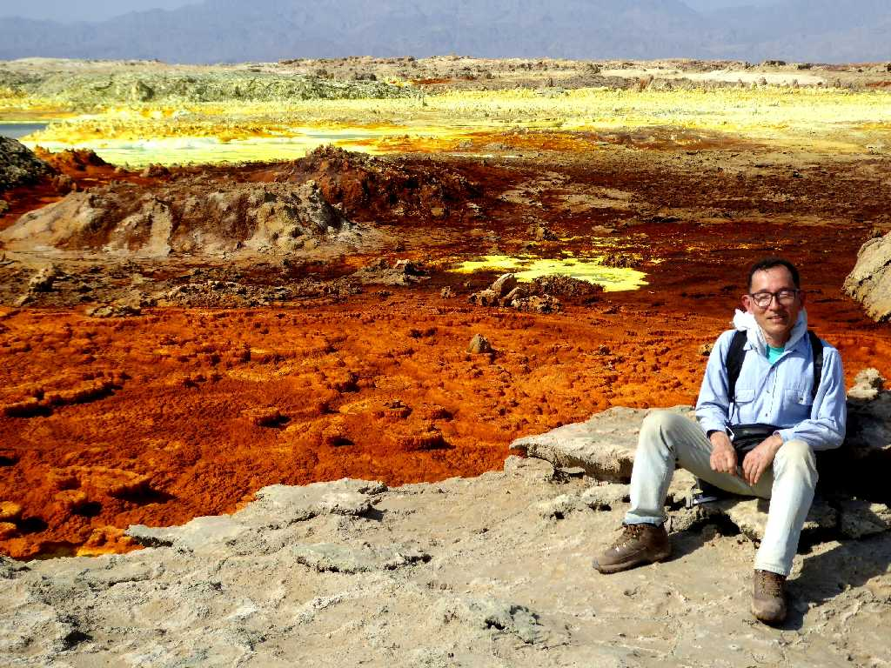

Crater Dallol Volcano
１９２６年の水蒸気噴火により形成された火口で２価鉄イオンと硫黄と塩水の神秘的な色彩に彩られたダロール火山の火口

Crater Dallol Volcano
緑色の水質は強酸性でＰＨ０未満である

Crater Dallol Volcano
赤色の水質は鉄分を含んでいる

Crater Dallol Volcano
海抜－１２５ｍに位置するダロール火山の火口は世界で最も低い火口と云われている

January 24 2017 Crater Dallol Volcano
ダロールはアファール語で溶解崩壊を意味する

Nozzle Crater Dallol Volcano
ダロール火山の噴気孔から熱水が吹き出している

Crater Dallol Volcano

Crater Dallol Volcano
アフリカ大地溝帯はアナザーアースが点在する

Crater Dallol Volcano

January 24 2017 Crater Dallol Volcano
世界で最も平均気温が高い地域で冬の１月でも気温が高くここは湿度も高くバテ気味

 AI解説
AI解説